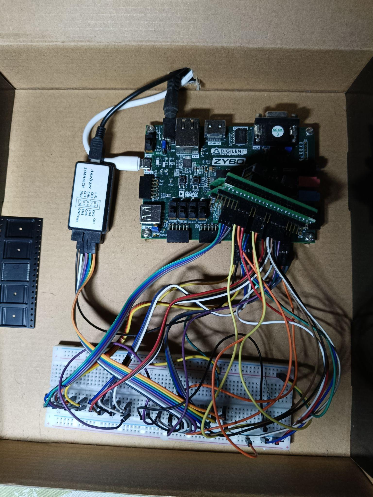

FPGA-based Raw NAND Flash Controller
Digilent Zybo & Altera DE1-SoC · Verilog + Embedded C + Embedded Linux
6
ONFI Commands
~1ms
Program time / KB
3ms
Block erase time
ONFI
Protocol

Digilent Zybo 7000 SoC FPGA Board · Logic analyser · TSOP adapter · Raw NAND Flash chip
Overview
Developed a bare-metal FPGA-based controller for raw 2D and 3D NAND Flash memories, capable of reading, writing, and erasing directly on the chip — no flash controller IC in the path. Built at IIT Bombay under Prof. Sandip Mondal, the controller was motivated by research needs to characterise stress-induced degradation and threshold-voltage distribution shifts in NAND cells, requiring cycle-accurate, low-level access to the memory array.
The hardware setup consists of a Digilent Zybo 7000 SoC FPGA Board, a logic analyser, a TSOP adapter for exposing NAND Flash pins, and the raw NAND Flash chip itself — all wired over a breadboard.
Implementation
Pins on the NAND Flash device must be driven with precise voltages and timings as specified in the ONFI protocol. After evaluating options — a pure Verilog FSM, Embedded Linux on the FPGA, and bare-metal Embedded C — bare-metal C via the Xilinx SDK and Vivado was chosen for the best balance of timing control and iteration speed.
The following ONFI commands were fully implemented and verified: READ_ID, RESET, READ_STATUS, PROGRAM_PAGE, READ_PAGE, and BLOCK_ERASE. Waveform analysis was used to optimise latency, bringing program time down to ~1 ms per kilobyte and erase time to 3 ms.
To demonstrate end-to-end correctness, images were written to the NAND Flash chip purely through the controller: transmitted as a hex dump over UART, stored on the device, read back serially via UART, and reconstructed into an image using a custom Python script.
NAND Flash Watermarking
Beyond the core controller, a novel NAND Flash Watermarking scheme was implemented for data security and counterfeiting prevention — inspired by Flash Watermark: An Anticounterfeiting Technique for NAND Flash Memories (Sakib, Milenković & Ray, IEEE Trans. Electron Devices, vol. 67, no. 10, 2020). The authors were contacted directly to discuss implementation details.
Various Program Erase Cycle schemes were implemented for high-speed program-erase cycles, along with a program disturb scheme to retrieve the watermark from the device.
Research Outcomes
The controller was the instrument used to collect characterisation data that led to three published papers at the Electronic Materials Conference 2025 — on stress-induced failure mechanisms, thermal threshold voltage distribution shifts, and program disturb behaviour in 3D NAND cells. Collaboration with the IIT Bombay Memory Technology team is ongoing. See the Research section for links.